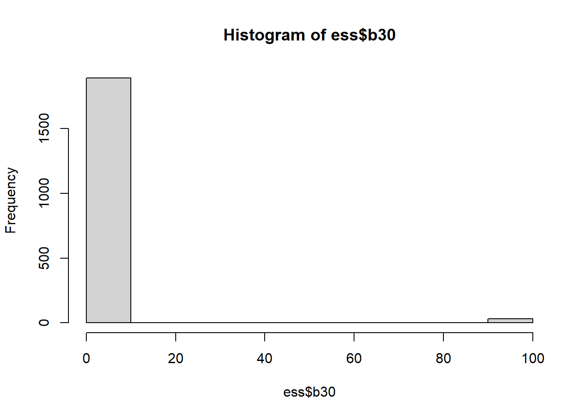
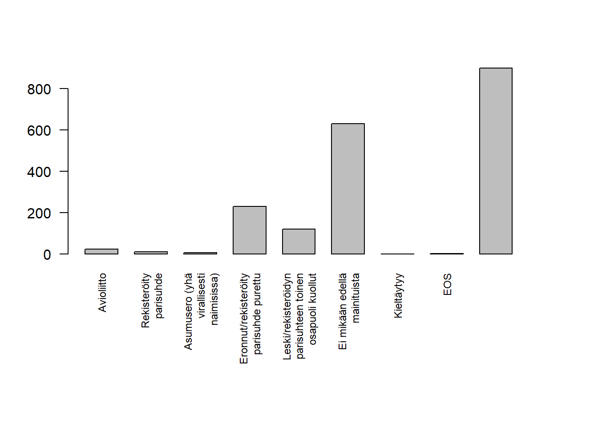

2 Harjoituskerta 2
Tällä harjoituskerralla tutustutuaan aineiston tarkastelemiseen tunnuslukujen ja graafien avulla sekä muuttujien muokkaamiseen ja uusien muuttujien luomiseen.
| Osa | Käsiteltävät asiat (viitteellinen asiasisältö, muutoksia voi tulla) |
| 1 | RStudioon ja R-kieleen tutustuminen |
| 2 | Aineiston kuvailu: frekvenssijakauma, tunnusluvut, kuviot, osa-aineiston poimiminen ja aineston ryhmittäinen tarkastelu |
| 3 | Yksinkertaiset muuttujamuunnokset, kahden muuttujan välinen yhteisvaihtelu, ristiintaulukointi |
| 4 | Korrelaatiot ja hajotakuvio, summamuuttujan tekeminen |
| 5 | Keskiarvotestit: t-testi ja ANOVA |
| 6 | Kertausta ja ohjausta ryhmätehtävään |
Tarkastellaan onko miesten ja naisten (f2_1) välillä eroa sen suhteen, mikä on korkein koulutus, jonka vastaaja on suorittanut (f15). HUOM! Sukupuoli 1 = mies, 2 = nainen. Koulutus on välillä 1-15. Poistetaan siis ensin puuttuvat arvot (=99).
ess$f15[ess$f15 == 99] <- NAtable(ess$sukupuoli, ess$b30)##
## 0 1 2 3 4 5 6 7 8 9 10 99
## 1 16 16 30 58 90 89 113 213 209 96 23 6
## 2 9 14 29 66 60 132 123 208 226 63 7 26# Yksittäinen muuttuja voidaan myös kopioda omaksi muuttujakseen ja ottaa frekvenssit siitä
internet <- ess$a2
table(internet)## internet
## 1 2 3 4 5
## 223 63 90 93 14562.1 Kuvailevat tunnusluvut epäjatkuvaluonteisille muuttujille
2.1.1 Moodi ja mediaani
Moodi eli yleisimmin esiintyvä arvo saadaan esille jo aiemmin käytetyllä summary() -komennolla. Tarkastellaan esimerkiksi siviilisäädyn moodia.
summary(ess$sivsaat)## 1 2 3 4 5 6 9 NA's
## 24 11 7 230 122 630 2 899Kun puuttuvat arvot (=NA ja 9) jätetään laskuista, suurin osa vastaajista on vastannut 6 eli “Ei mikään edellä mainituista”.
Järjestysasteikollisen keskikohtaa voidaan kuvata mediaanilla. Se on keskimmäinen arvo, kun muuttujat on laitettu suuruusjärjestykseen. Esimerkiksi ilmastoahdistusta mittaavaan muuttujan mediaani saadaan seuraavasti:
median(ess$d24, na.rm = T)## [1] 3R on varovainen puuttuvien arvojen suhteen eikä laske mediaania, jos
mukana on puuttuvia arvoja (NA = Not Available). R siis pitää huolen
siitä, ettei käyttäjä hölmöile. On mietittävä, vaikuttavatko puuttuvat
arvot tulokseen ja/tai tulkintaan. Jos ei, R:n voi käskeä laskemaan
keskiarvon ja -hajonnan ilman puuttuvia arvoja asetukselle na.rm = TRUE
-asetuksella. Tämä jättää puuttuvat arvot huomiotta. Huomaa, että asetusta
on käytetty myös seuraavissa komennoissa.
2.2 Kuvailevat tunnusluvut jatkuvaluonteisille muuttujille
2.2.1 Keskiarvon ja -hajonnan laskeminen
Laskea muuttujalle B30 keskiarvo ja -hajonta
mean(ess$b30)## [1] NAsd(ess$b30)## [1] NAHuomaa, että tässä komennossa on käytetty na.rm = T -asetusta, koska R ei automaattisesti tiedä mitä puuttuville arvoille pitäisi tehdä.
mean(ess$b30, na.rm = TRUE)## [1] 7.787201sd(ess$b30, na.rm = TRUE)## [1] 12.05643Puuttuvia arvoja voidaan kartoittaa esimerkiksi is.na-komennolla. Se on looginen funktio, joka palauttaa arvon FALSE, kun arvo ei puutu, ja arvon TRUE, kun arvo puuttuu. Huomaa, että puuttuvia arvoja löytyy vain tästä muuttujasta, koska se on ainoa muuttuja jolle ne on määritelty.
is.na(ess$b30)## [1] FALSE FALSE FALSE FALSE FALSE FALSE FALSE FALSE FALSE FALSE FALSE FALSE FALSE FALSE FALSE FALSE FALSE FALSE FALSE FALSE
## [21] FALSE FALSE FALSE FALSE FALSE FALSE FALSE FALSE FALSE FALSE FALSE FALSE FALSE FALSE FALSE FALSE FALSE FALSE FALSE FALSE
## [41] FALSE FALSE FALSE FALSE FALSE FALSE FALSE FALSE FALSE FALSE FALSE FALSE FALSE FALSE FALSE FALSE FALSE FALSE FALSE FALSE
## [61] FALSE FALSE FALSE FALSE FALSE FALSE FALSE FALSE FALSE FALSE FALSE FALSE FALSE FALSE FALSE FALSE FALSE FALSE FALSE FALSE
## [81] FALSE FALSE FALSE FALSE FALSE FALSE FALSE FALSE FALSE FALSE FALSE FALSE FALSE FALSE FALSE FALSE FALSE FALSE FALSE FALSE
## [101] FALSE FALSE FALSE FALSE FALSE FALSE FALSE FALSE FALSE FALSE FALSE FALSE FALSE FALSE FALSE FALSE FALSE FALSE FALSE FALSE
## [121] FALSE FALSE FALSE FALSE FALSE FALSE FALSE FALSE FALSE FALSE FALSE FALSE FALSE FALSE FALSE FALSE FALSE FALSE FALSE FALSE
## [141] FALSE FALSE FALSE FALSE FALSE FALSE FALSE FALSE FALSE FALSE FALSE FALSE FALSE FALSE FALSE FALSE FALSE FALSE FALSE FALSE
## [161] FALSE FALSE FALSE FALSE FALSE FALSE FALSE FALSE FALSE FALSE FALSE FALSE FALSE FALSE FALSE FALSE FALSE FALSE FALSE FALSE
## [181] FALSE FALSE FALSE FALSE FALSE FALSE FALSE FALSE FALSE FALSE FALSE FALSE FALSE FALSE FALSE FALSE FALSE FALSE FALSE FALSE
## [201] FALSE FALSE FALSE FALSE FALSE FALSE FALSE FALSE FALSE FALSE FALSE FALSE FALSE FALSE FALSE FALSE FALSE FALSE FALSE FALSE
## [221] FALSE FALSE FALSE FALSE FALSE FALSE FALSE FALSE FALSE FALSE FALSE FALSE FALSE FALSE FALSE FALSE FALSE FALSE FALSE FALSE
## [241] FALSE FALSE FALSE FALSE FALSE FALSE FALSE FALSE FALSE FALSE FALSE FALSE FALSE FALSE FALSE FALSE FALSE FALSE FALSE FALSE
## [261] FALSE FALSE FALSE FALSE FALSE FALSE FALSE FALSE FALSE FALSE FALSE FALSE FALSE FALSE FALSE FALSE FALSE FALSE FALSE FALSE
## [281] FALSE FALSE FALSE FALSE FALSE FALSE FALSE FALSE FALSE FALSE FALSE FALSE FALSE FALSE FALSE FALSE FALSE FALSE FALSE FALSE
## [301] FALSE FALSE FALSE FALSE FALSE FALSE FALSE FALSE FALSE FALSE FALSE FALSE FALSE FALSE FALSE FALSE FALSE FALSE FALSE FALSE
## [321] FALSE FALSE FALSE FALSE FALSE FALSE FALSE FALSE FALSE FALSE FALSE FALSE FALSE FALSE FALSE FALSE FALSE FALSE FALSE FALSE
## [341] FALSE FALSE FALSE FALSE FALSE FALSE FALSE FALSE FALSE FALSE FALSE FALSE FALSE FALSE FALSE FALSE FALSE FALSE FALSE FALSE
## [361] FALSE FALSE FALSE FALSE FALSE FALSE FALSE FALSE FALSE FALSE FALSE FALSE FALSE FALSE FALSE FALSE FALSE FALSE FALSE FALSE
## [381] FALSE FALSE FALSE FALSE FALSE FALSE FALSE FALSE FALSE FALSE FALSE FALSE FALSE FALSE FALSE FALSE FALSE FALSE FALSE FALSE
## [401] FALSE FALSE FALSE FALSE FALSE FALSE FALSE FALSE FALSE FALSE FALSE FALSE FALSE FALSE FALSE FALSE FALSE FALSE FALSE FALSE
## [421] FALSE FALSE FALSE FALSE FALSE FALSE FALSE FALSE FALSE FALSE FALSE FALSE FALSE FALSE FALSE FALSE FALSE FALSE FALSE FALSE
## [441] FALSE FALSE FALSE FALSE FALSE FALSE FALSE FALSE FALSE FALSE FALSE FALSE FALSE FALSE FALSE FALSE FALSE FALSE FALSE FALSE
## [461] FALSE FALSE FALSE FALSE FALSE FALSE FALSE FALSE FALSE FALSE FALSE FALSE FALSE FALSE FALSE FALSE FALSE FALSE FALSE FALSE
## [481] FALSE FALSE FALSE FALSE FALSE FALSE FALSE FALSE FALSE FALSE FALSE FALSE FALSE FALSE FALSE FALSE FALSE FALSE FALSE FALSE
## [501] FALSE FALSE FALSE FALSE FALSE FALSE FALSE FALSE FALSE FALSE FALSE FALSE FALSE FALSE FALSE FALSE FALSE FALSE FALSE FALSE
## [521] FALSE FALSE FALSE FALSE FALSE FALSE FALSE FALSE FALSE FALSE FALSE FALSE FALSE FALSE FALSE FALSE FALSE FALSE FALSE FALSE
## [541] FALSE FALSE FALSE FALSE FALSE FALSE FALSE FALSE FALSE FALSE FALSE FALSE FALSE FALSE FALSE FALSE FALSE FALSE FALSE FALSE
## [561] FALSE FALSE FALSE FALSE FALSE FALSE FALSE FALSE FALSE FALSE FALSE FALSE FALSE FALSE FALSE FALSE FALSE FALSE FALSE FALSE
## [581] FALSE FALSE FALSE FALSE FALSE FALSE FALSE FALSE FALSE FALSE FALSE FALSE FALSE FALSE FALSE FALSE FALSE FALSE FALSE FALSE
## [601] FALSE FALSE FALSE FALSE FALSE FALSE FALSE FALSE FALSE FALSE FALSE FALSE FALSE FALSE FALSE FALSE FALSE FALSE FALSE FALSE
## [621] FALSE FALSE FALSE FALSE FALSE FALSE FALSE FALSE FALSE FALSE FALSE FALSE FALSE FALSE FALSE FALSE FALSE FALSE FALSE FALSE
## [641] FALSE FALSE FALSE FALSE FALSE FALSE FALSE FALSE FALSE FALSE FALSE FALSE FALSE FALSE FALSE FALSE FALSE FALSE FALSE FALSE
## [661] FALSE FALSE FALSE FALSE FALSE FALSE FALSE FALSE FALSE FALSE FALSE FALSE FALSE FALSE FALSE FALSE FALSE FALSE FALSE FALSE
## [681] FALSE FALSE FALSE FALSE FALSE FALSE FALSE FALSE FALSE FALSE FALSE FALSE FALSE FALSE FALSE FALSE FALSE FALSE FALSE FALSE
## [701] FALSE FALSE FALSE FALSE FALSE FALSE FALSE FALSE FALSE FALSE FALSE FALSE FALSE FALSE FALSE FALSE FALSE FALSE FALSE FALSE
## [721] FALSE FALSE FALSE FALSE FALSE FALSE FALSE FALSE FALSE FALSE FALSE FALSE FALSE FALSE FALSE FALSE FALSE FALSE FALSE FALSE
## [741] FALSE FALSE FALSE FALSE FALSE FALSE FALSE FALSE FALSE FALSE FALSE FALSE FALSE FALSE FALSE FALSE FALSE FALSE FALSE FALSE
## [761] FALSE FALSE FALSE FALSE FALSE FALSE FALSE FALSE FALSE FALSE FALSE FALSE FALSE FALSE FALSE FALSE FALSE FALSE FALSE FALSE
## [781] FALSE FALSE FALSE FALSE FALSE FALSE FALSE FALSE FALSE FALSE FALSE FALSE FALSE FALSE FALSE FALSE FALSE FALSE FALSE FALSE
## [801] FALSE FALSE FALSE FALSE FALSE FALSE FALSE FALSE FALSE FALSE FALSE FALSE FALSE FALSE FALSE FALSE FALSE FALSE FALSE FALSE
## [821] FALSE FALSE FALSE FALSE FALSE FALSE FALSE FALSE FALSE FALSE FALSE FALSE FALSE FALSE FALSE FALSE FALSE FALSE FALSE FALSE
## [841] FALSE FALSE FALSE FALSE FALSE FALSE FALSE FALSE FALSE FALSE FALSE FALSE FALSE FALSE FALSE FALSE FALSE FALSE FALSE FALSE
## [861] FALSE FALSE FALSE FALSE FALSE FALSE FALSE FALSE FALSE FALSE FALSE FALSE FALSE FALSE FALSE FALSE FALSE FALSE FALSE FALSE
## [881] FALSE FALSE FALSE FALSE FALSE FALSE FALSE FALSE FALSE FALSE FALSE FALSE FALSE FALSE FALSE FALSE FALSE FALSE FALSE FALSE
## [901] FALSE FALSE FALSE FALSE FALSE FALSE FALSE FALSE FALSE FALSE FALSE FALSE FALSE FALSE FALSE FALSE FALSE FALSE FALSE FALSE
## [921] FALSE FALSE FALSE FALSE FALSE FALSE FALSE FALSE FALSE FALSE FALSE FALSE FALSE FALSE FALSE FALSE FALSE FALSE FALSE FALSE
## [941] FALSE FALSE FALSE FALSE FALSE FALSE FALSE FALSE FALSE FALSE FALSE FALSE FALSE FALSE FALSE FALSE FALSE FALSE FALSE FALSE
## [961] FALSE FALSE FALSE FALSE FALSE FALSE FALSE FALSE FALSE FALSE FALSE FALSE FALSE FALSE FALSE FALSE FALSE FALSE FALSE FALSE
## [981] FALSE FALSE FALSE FALSE FALSE FALSE FALSE FALSE FALSE FALSE FALSE FALSE FALSE FALSE FALSE FALSE FALSE FALSE FALSE FALSE
## [ reached getOption("max.print") -- omitted 925 entries ]Tällainen lista ei kuitenkaan ole kovin käyttökelpoinen. Summataan puuttuvat havainnot yhteen lukuun, jolloin nähdään suoraan puuttuvien havaintojen määrä.
sum(is.na(ess$b30))## [1] 32.3 Aineiston graafinen kuvailu
2.3.1 Histogrammi
Histogrammin, joka kuvaa havaintojen jakaumaa saa helposti hist()-komennolla.
hist(ess$b30)
Mikäli histogrammi on liian karkea tai hienojakoinen, palkkien määrää voidaan muuttaa break -asetuksella.
Vaaka- ja pystyakselien pituutta xlim ja ylim -asetuksilla.
hist(aly,
breaks = 20,
xlim = c(0, 200),
ylim = c(0, 200)
)2.3.2 Hajontakuvio (plot)
Erilaisia yhden tai kahden muuttujan kuvaajia saa tehtyä plot-komennolla. Esimerkiksi ensimmäisellä harjoituskerralla tehty älykkyysosamäärä voidaan kuvata seuraavalla komennolla:
plot(aly,
main = "Vastaajien ÄO",
xlab = "ID",
ylab = "Älykkyysosamäärä")
abline(h = c(70, 130), col = "red")Huomaa, että komennossa on paljon “ylimääräistä”, pelkkä plot(aly) olisi tuottanut kuvion ilman selitystekstejä ja viivoja.
Komennot main, xlab ja ylab ovat yleisesti käytettyjä asetuksia kaikissa R:n grafiikkakomennoissa.
R tunnistaa muuttujan tyypin ja tekee kuvion sen mukaisesti. Edellisessä kuviossa käytetty muuttuja oli numeraalinen,
jonka takia kuviosta tuli hajontakuvio. Seuraavassa tehdään uusi muuttuja sukupuolesta ja muutetaan se samalla
luokkamuuttujaksi.
sukupuoli <- as.factor(ess$sukupuoli)
plot(sukupuoli)
2.3.4 Ristiintaulukointi
taulukko <- table(ess$sukupuoli, ess$b30)
taulukko##
## 0 1 2 3 4 5 6 7 8 9 10 99
## 1 16 16 30 58 90 89 113 213 209 96 23 6
## 2 9 14 29 66 60 132 123 208 226 63 7 26prop.table(taulukko)##
## 0 1 2 3 4 5 6 7 8 9
## 1 0.008324662 0.008324662 0.015608741 0.030176899 0.046826223 0.046305931 0.058792924 0.110822060 0.108740895 0.049947971
## 2 0.004682622 0.007284079 0.015088450 0.034339230 0.031217482 0.068678460 0.063995838 0.108220604 0.117585848 0.032778356
##
## 10 99
## 1 0.011966701 0.003121748
## 2 0.003642040 0.013527575Frekvenssijakaumat
Muuttujan frekvenssijakaumaa voi tutkia funktiolla table. Prosenttijakauman saa näkymään funktiolla prop.table, jolle annetaan argumentiksi table-objekti.
frekvenssitaulu <- table(df$F11, useNA = "always")
frekvenssitaulu##
## Avioliitto Rekisteröity parisuhde
## 24 11
## Asumusero (yhä virallisesti naimisissa) Eronnut/rekisteröity parisuhde purettu
## 7 230
## Leski/rekisteröidyn parisuhteen toinen osapuoli kuollut Ei mikään edellä mainituista
## 122 630
## Kieltäytyy EOS
## 0 2
## <NA>
## 899prop.table(frekvenssitaulu)##
## Avioliitto Rekisteröity parisuhde
## 0.012467532 0.005714286
## Asumusero (yhä virallisesti naimisissa) Eronnut/rekisteröity parisuhde purettu
## 0.003636364 0.119480519
## Leski/rekisteröidyn parisuhteen toinen osapuoli kuollut Ei mikään edellä mainituista
## 0.063376623 0.327272727
## Kieltäytyy EOS
## 0.000000000 0.001038961
## <NA>
## 0.467012987Pylväsdiagrammi
# Muutetaan kuvan marginaaleja
par(mar=c(10, 4, 4, 4))
# Jaetaan merkkijonot useammalle riville, niin näkyvät paremmin kuvassa
levels(df$F11) <- str_wrap(levels(df$F11), 20)
frekvenssitaulu <- table(df$F11, useNA = "always")
# las-parametri vaihtaa x-akselin labeleiden suunnan, space-parametrilla muutetaan
# pylväiden etäisyyksiä, cex.names-parametrilla muutetaan x-akselin tekstin kokoa
barplot(frekvenssitaulu, las = 2, space = c(0.5), cex.names = 0.75) Huomaa, että kaksi ensimmäistä komentoa ovat vain alustavia toimenpiteitä ja kuvio tehdään kahdella viimeisellä komennolla.
2.4 Osa-aineiston poimiminen
Toisinaan on tarvetta käyttää vain osaa aineistosta. Jos halutaan tarkastella esimerkiksi miesten ja naisten eroja, voidaan muodostaa osa-aineistot, joista toinen sisältää naiset ja toinen miehet. R tarjoaa osa-aineistojen poimimiseen useita keinoja, joista seuraavassa on esitelty kolme.
2.4.1 Komennon sisällä
Aineistoa voidaan rajata komentojen sisällä. Ehdollisia lauseita voidaan tehdä samanaikaisesti useampia käyttämällä &-operaattoria. Esimerkiksi seuraavassa on taulukoitu vain korkeasti koulutetut naiset.
table(ess$b30[ess$sukupuoli == 2 & ess$b30 < 7])##
## 0 1 2 3 4 5 6
## 9 14 29 66 60 132 1232.4.2 Uuden aineiston luominen operaattorien avulla
Edellisen esimerkin kohdalla osa-aineiston poiminta koskee vain yhtä komentoa. Koska R mahdollistaa useiden aineistojen käyttämisen samanaikaisesti ja uusien aineistojen luominen on verrattain vaivatonta, on usein viisaampaa muodostaa kokonaan uusi aineisto, jolla operoidaan. Näin vältytään esimerkiksi aineiston sekoittumisen ja/tai pilaantumisen riskeiltä. Seuraavassa oneritelty miehet omaksi aineistokseen ehdollisella lauseella.
ess_m <- ess[ess$sukupuoli == 1, ]2.5 Muuttujien muokkaaminen
2.5.1 Iän laskeminen syntymävuoden perusteella
Ikä on useissa analyyseissa käytetty taustamuuttuja. ESS-kyselyssä ei kuitenkaan ole kysytty ikää, vaan vastaajan syntyvuosi, jonka perusteella ikä on laskettavissa (= kyselyn keräämisvuosi - vastaajan syntymävuosi). Seuraavassa lasketaan vastaajan ikä.
table(ess$f3_1)##
## 1918 1921 1923 1924 1925 1926 1927 1928 1929 1930 1931 1932 1933 1934 1935 1936 1937 1938 1939 1940 1941 1942 1943 1944 1945
## 1 1 1 3 1 2 1 4 5 7 15 12 13 13 10 13 24 17 20 21 28 13 23 21 24
## 1946 1947 1948 1949 1950 1951 1952 1953 1954 1955 1956 1957 1958 1959 1960 1961 1962 1963 1964 1965 1966 1967 1968 1969 1970
## 28 39 33 33 42 36 36 30 36 27 34 28 32 33 34 43 43 40 34 41 31 29 23 31 30
## 1971 1972 1973 1974 1975 1976 1977 1978 1979 1980 1981 1982 1983 1984 1985 1986 1987 1988 1989 1990 1991 1992 1993 1994 1995
## 23 19 29 20 29 35 24 32 33 20 27 24 22 27 38 26 31 35 26 24 27 17 26 21 16
## 1996 1997 1998 1999 2000 2001
## 29 19 24 24 22 17ess$ikä <- 2016 - ess$f3_1
table(ess$ikä)##
## 15 16 17 18 19 20 21 22 23 24 25 26 27 28 29 30 31 32 33 34 35 36 37 38 39 40 41 42 43 44 45 46 47 48 49 50 51 52 53 54 55 56
## 17 22 24 24 19 29 16 21 26 17 27 24 26 35 31 26 38 27 22 24 27 20 33 32 24 35 29 20 29 19 23 30 31 23 29 31 41 34 40 43 43 34
## 57 58 59 60 61 62 63 64 65 66 67 68 69 70 71 72 73 74 75 76 77 78 79 80 81 82 83 84 85 86 87 88 89 90 91 92 93 95 98
## 33 32 28 34 27 36 30 36 36 42 33 33 39 28 24 21 23 13 28 21 20 17 24 13 10 13 13 12 15 7 5 4 1 2 1 3 1 1 12.5.2 Muuttujan arvojen korvaaminen/muuttaminen
Seuraavassa luodaan aineistoon uusi muuttuja, c_muut, ja siirretään siihen viisiportaisen Likert-asteikon arvot niin, että arvot 1 ja 2 ovat 1, 3 ovat 3, 4 ja 5 ovat 3. Samalla muutetaan arvo 9 puuttuvaksi arvoksi.
ess$c_muut <- ess$c43
table(ess$c_muut)##
## 1 2 3 4 5 9
## 103 484 627 592 87 32ess$c_muut[ess$c43 == 9] <- NA
ess$c_muut[ess$c43 == 2] <- 1
ess$c_muut[ess$c43 == 3] <- 2
ess$c_muut[ess$c43 == 4 | ess$c43 == 5] <- 3
table(ess$c_muut)##
## 1 2 3
## 587 627 679Edellisessä esimerkissä muokattava muuttuja on viisiportainen ja arvot on helppo muuttaa “käsin”. Jos muokataan muuttujaa, jossa on useampia arvoja, on kätevämpää määritellä lukujoukko %in%-operaattorilla, jonka perusteella muutokset tehdään. Seuraavassa muutetaan ikä-muuttujan arvot ikäluokiksi siten, että luokkia muodostuu neljä:
* 1 = 30-vuotiaat ja nuoremmat
* 2 = 31-50-vuotiaat
* 3 = 51-65-vuotiaat
* 4 = 66-vuotiaat ja vanhemmat
ess$ikäluok[ess$ikä %in% c(0:30)] <- 1
ess$ikäluok[ess$ikä %in% c(31:50)] <- 2
ess$ikäluok[ess$ikä %in% c(51:65)] <- 3
ess$ikäluok[ess$ikä %in% c(66:120)] <- 4
table(ess$ikä)##
## 15 16 17 18 19 20 21 22 23 24 25 26 27 28 29 30 31 32 33 34 35 36 37 38 39 40 41 42 43 44 45 46 47 48 49 50 51 52 53 54 55 56
## 17 22 24 24 19 29 16 21 26 17 27 24 26 35 31 26 38 27 22 24 27 20 33 32 24 35 29 20 29 19 23 30 31 23 29 31 41 34 40 43 43 34
## 57 58 59 60 61 62 63 64 65 66 67 68 69 70 71 72 73 74 75 76 77 78 79 80 81 82 83 84 85 86 87 88 89 90 91 92 93 95 98
## 33 32 28 34 27 36 30 36 36 42 33 33 39 28 24 21 23 13 28 21 20 17 24 13 10 13 13 12 15 7 5 4 1 2 1 3 1 1 1